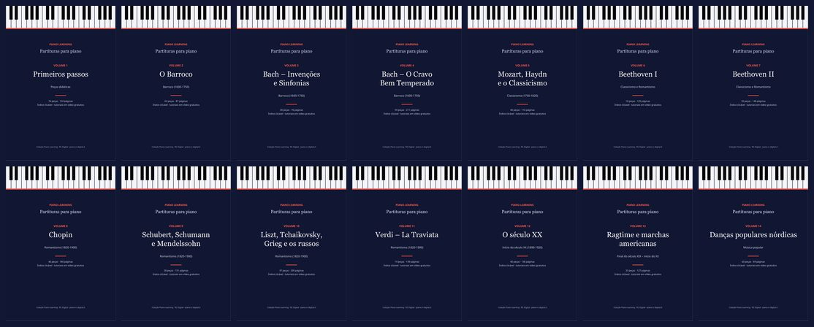
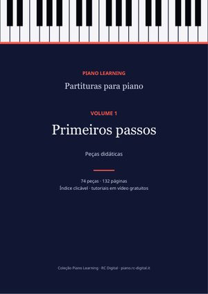
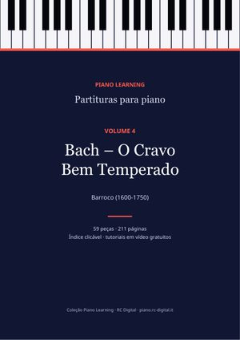
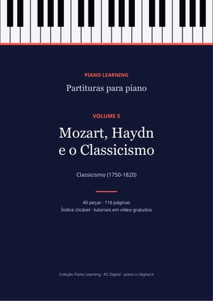
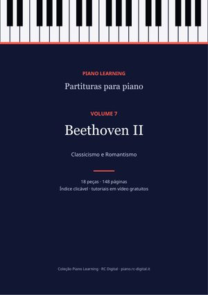
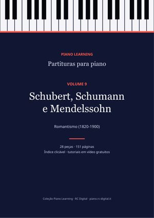
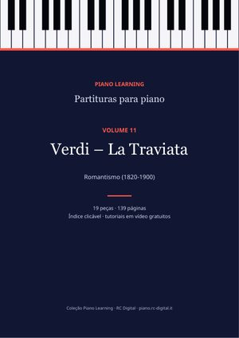
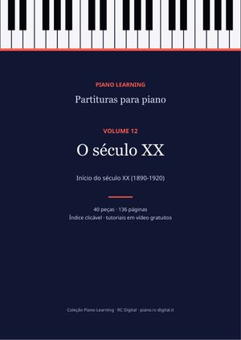
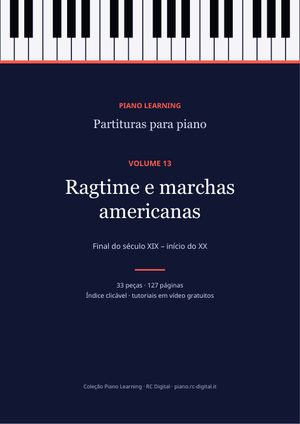
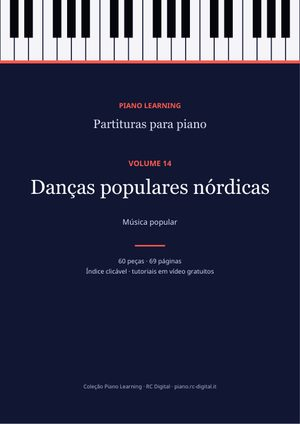

Partituras de piano em PDF
14 volumes organizados por compositor e período, com índice clicável, biografias dos compositores e o link para o tutorial em vídeo de cada peça que o tem. Cada compra inclui o PDF em 10 idiomas.

A coleção completa
Os 14 volumes: 564 peças, 1.933 páginas de música.
Poupas 64% em relação aos 14 volumes avulsos (55,86 €).
19,99 €
Comprar
Volume 1Primeiros passos
Estudos e peças fáceis: Burgmüller, Czerny, Hanon, Schumann (Álbum para a juventude), Kuhlau.
74 peças · 132 páginas
3,99 €
Comprar Volume 2
Volume 2O Barroco
Bach (minuetos, polonesas, pequenos prelúdios, corais), Händel, Scarlatti, Rameau, Pachelbel.
62 peças · 87 páginas
3,99 €
Comprar Volume 3
Volume 3Bach – Invenções e Sinfonias
As 15 Invenções a duas vozes e as 15 Sinfonias a três vozes, completas.
30 peças · 76 páginas
3,99 €
Comprar
Volume 4Bach – O Cravo Bem Temperado
Prelúdios e fugas d'O Cravo Bem Temperado, Suítes inglesas e francesas, Suíte BWV 1006a, A arte da fuga.
59 peças · 211 páginas
3,99 €
Comprar
Volume 5Mozart, Haydn e o Classicismo
Rondó alla turca, Sonata facile, Fantasia em ré menor e outros clássicos do século XVIII.
40 peças · 116 páginas
3,99 €
Comprar Volume 6
Volume 6Beethoven I
Para Elisa, a sonata «Ao luar», a Patética, variações e sonatas.
18 peças · 125 páginas
3,99 €
Comprar
Volume 7Beethoven II
A Appassionata e as grandes sonatas.
18 peças · 148 páginas
3,99 €
Comprar Volume 8
Volume 8Chopin
Os 24 Prelúdios, Noturnos, Valsas, Estudos e Baladas.
46 peças · 186 páginas
3,99 €
Comprar
Volume 9Schubert, Schumann e Mendelssohn
Os 8 Improvisos de Schubert, Cenas infantis, Romances sem palavras, Brahms.
28 peças · 151 páginas
3,99 €
Comprar Volume 10
Volume 10Liszt, Tchaikovsky, Grieg e os russos
Consolações, As estações, Peer Gynt, Quadros de uma exposição e outros românticos.
37 peças · 230 páginas
3,99 €
Comprar
Volume 11Verdi – La Traviata
A ópera completa reduzida para piano solo, número a número.
19 peças · 139 páginas
3,99 €
Comprar
Volume 12O século XX
Debussy, Satie, Rachmaninoff, Scriabin, Bartók.
40 peças · 136 páginas
3,99 €
Comprar
Volume 13Ragtime e marchas americanas
Scott Joplin, John Philip Sousa e outros.
33 peças · 127 páginas
3,99 €
Comprar
Volume 14Danças populares nórdicas
Danças tradicionais suecas e finlandesas.
60 peças · 69 páginas
3,99 €
ComprarPagamento seguro com Payhip e download imediato por e-mail. As partituras são edições livres (domínio público ou Creative Commons): também as encontras grátis, peça a peça, nas páginas deste site; aqui tens todas organizadas num só ficheiro, com os créditos completos de cada edição.